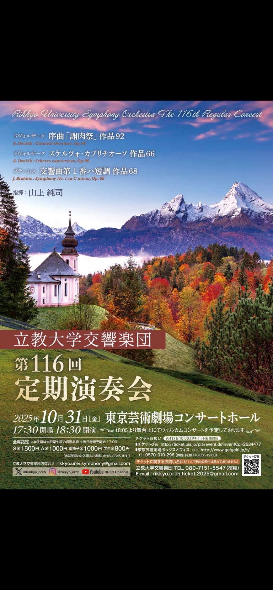
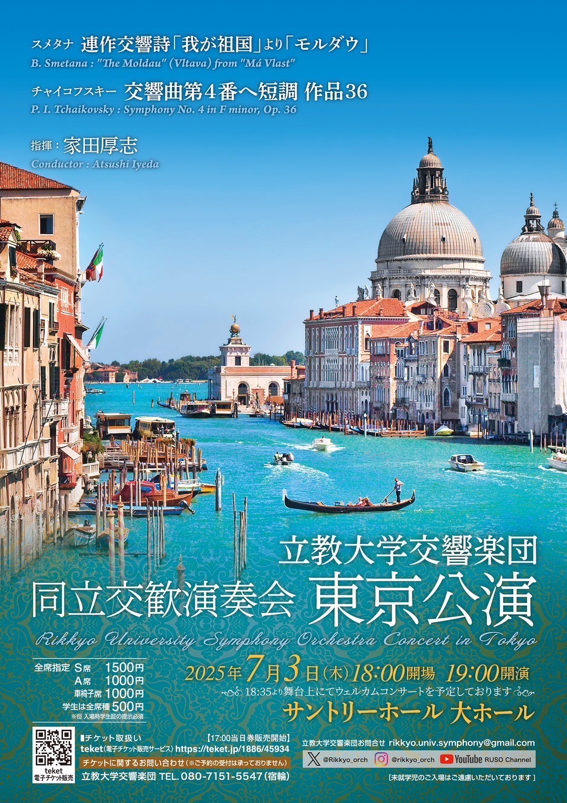
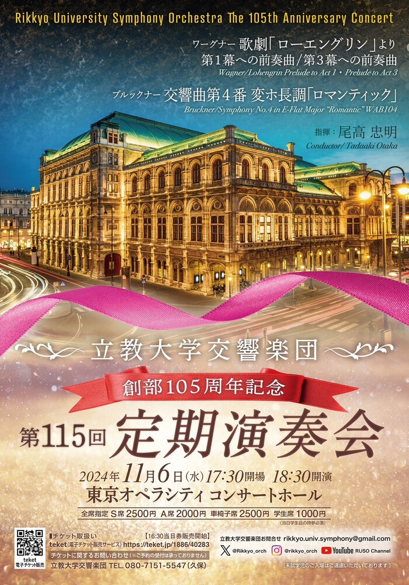

2026.06.15
第65回同立交歓演奏会
- 日時
- 2026年6月15日
- 会場
- 東京芸術劇場
- 指揮
- 記録を確認中
- 曲目
- 記録を確認中
Archive
確認できている2002年度以降の公演記録を、年度ごとに掲載しています。
2026
2026.06.15
2025

2025.10.31

2025.07.03
.jpg)
2025.06.15
2024

2024.11.06
2024.06.15
2023
2023.11.02
2023.02.20
2023
2022
2022.11.23
2022.06.10
2022.02.20
2021
2022.02.25
2021.11.06
2021.06.27
2020
2020.11.11
2019
2020.02.21
2019.11.08
2019.06.29
2018
2019.02.22
2018.11.10
2018.07.07
2017
2018.02.16
2017.11.05
2017.06.23
2016
2017.02.22
2016.11.11
2016.06.25
2015
2016.02.19
2015.11.07
2015.06.27
2014
2015.02.20
2014.11.09
2014.06.15
2013
2014.02.23
2013.11.08
2013.06.29
2013.06.15
2012
2013.02.24
2012.11.11
2012.06.10
2011
2012.02.25
2011.11.04
2011.06.24
2011.06.18
2010
2011.02.25
2011.02.23
2010.11.13
2010.06.20
2009
2009.11.08
2009.06.28
2009.06.02
2008
2009.02.28
2008.11.09
2008.06.22
2007
2008.02.29
2007.11.02
2007.07.08
2007.06.16
2006
2006.11.11
2006.06.25
2005
2005.11.03
2005.06.11
2005.06.05
2004
2005.03.04
2004.11.06
2004.08.23
2004.06.20
2003
2004.03.05
2003.11.22
2003.06.21
2003.06.08
2002
2003.03.02
2002.11.04
2002.06.22
該当する公演が見つかりませんでした。
次回演奏会の日時、会場、チケット案内は最新の公演情報ページに掲載しています。